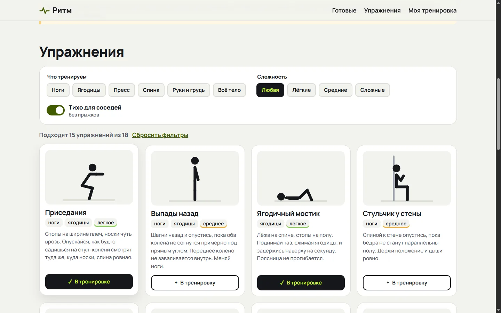
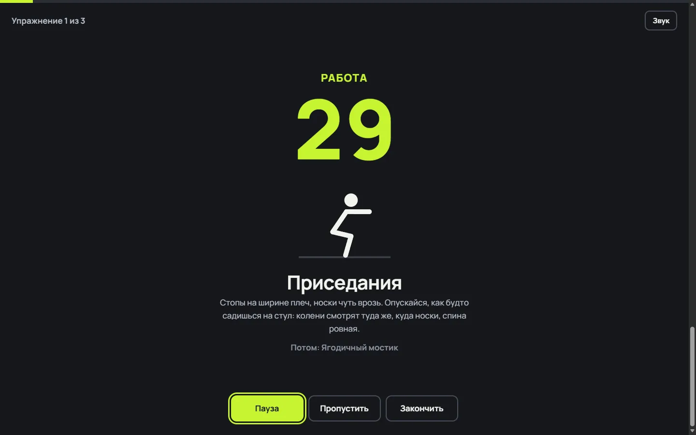
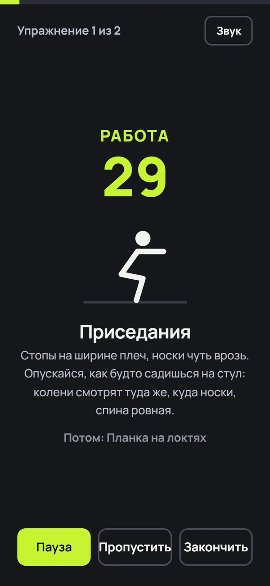
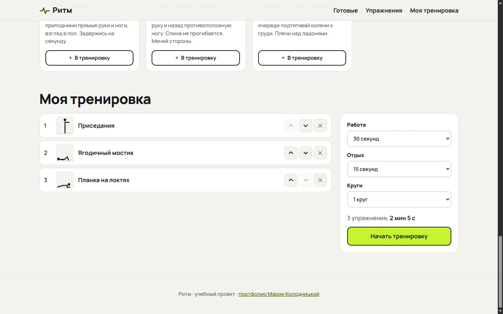

мини-сайт · учебный проект
Ритм (тренировки дома)
Задача
Короткая тренировка без инвентаря, которую можно сделать в перерыве, не зная техники заранее и не мешая соседям снизу.
Для кого
Люди, которые работают за компьютером и хотят размяться дома 5-10 минут. Телефон лежит рядом на полу, поэтому всё должно быть видно издалека.

Решения и почему
Упражнения
- У каждого упражнения человечек с двумя позами, между которыми он плавно двигается. Оживает при наведении мыши и при переходе клавиатурой
- При системной настройке "уменьшить движение" человечки стоят на месте
- Фильтр "Тихо для соседей" убирает прыжки
- Готовые тренировки можно запустить сразу или взять за основу и изменить
- Порядок в своей тренировке меняется кнопками "выше" и "ниже": перетаскивание неудобно на телефоне и недоступно с клавиатуры
Таймер
- Считает от времени окончания шага, а не вычитает по секунде: так не отстаёт, если вкладка была в фоне
- Не даёт экрану погаснуть посреди планки
- Цифры и цвет фазы видно с пола: работа лаймовая, отдых голубой
- Пробел ставит паузу. Esc сначала останавливает тренировку и показывает итог, второй Esc закрывает окно
- Скринридер объявляет только смену шага, а не каждую секунду
- Звук на последних трёх секундах, отключается кнопкой




Как проверяла
Таймер проверяла на коротких шагах по 1-2 секунды, чтобы пройти тренировку целиком за 10 секунд, и на обычных 30 секундах в Edge с настоящими нажатиями клавиш.
| № | Что проверяю | Действие | Ожидаю | Получила | Итог |
|---|---|---|---|---|---|
| 1 | Фильтр Тихо | Включить | Без прыжков | 15 упражнений из 18 | пройдено |
| 2 | Тихо и сложные | Добавить "Сложные" | Сложные без прыжков | "Отжимания", "Боковая планка" | пройдено |
| 3 | Пустой результат | Добавить "Ноги" | Подсказка, почему пусто | так и есть | пройдено |
| 4 | Длительность | 3 упражнения, 30/15 секунд | 5 + 3 × 30 + 2 × 15 = 125 секунд | "2 мин 5 с" | пройдено |
| 5 | Круги | 2 круга | 5 + 6 × 30 + 5 × 15 = 260 секунд | "4 мин 20 с" | пройдено |
| 6 | Порядок | Нажать "Ниже" у первого | Упражнение ниже, фокус остаётся на нём | так и есть | пройдено |
| 7 | Удаление | Убрать последнее | Фокус на соседнем | так и есть | пройдено |
| 8 | Старт с клавиатуры | Enter на "Начать тренировку" | Подготовка 5 секунд, фокус на "Пауза" | так и есть | пройдено |
| 9 | Пауза | Пробел, подождать 1,5 секунды | Время стоит | секунды не изменились | пройдено |
| 10 | Прогресс | Прошло 5,3 из 10 секунд | Полоса примерно на половине | 52% | пройдено |
| 11 | Первый Esc | Esc во время работы | Тренировка остановлена, окно открыто | "Тренировка остановлена" | пройдено |
| 12 | Второй Esc | Esc ещё раз | Окно закрыто, фокус на кнопке запуска | фокус на "Начать тренировку" | пройдено |
| 13 | Конец тренировки | Дождаться конца | Итог и кнопка "Ещё раз" в фокусе | "Отличная работа!", фокус на "Ещё раз" | пройдено |
Что нашла и исправила
- Птица-собака поднимала руку и ногу одной стороны. Собрала все 18 поз на один лист и проверила глазами: в упражнении должны подниматься противоположные рука и нога.
- Пустое окно таймера. Окно открывалось на долю секунды без цифр, пока браузер включал запрет на выключение экрана. Теперь сначала рисуется шаг.
- Первый вариант Esc закрывал окно сразу, и человек не видел, сколько успел сделать.
- "2 секунд". Голосовое объявление не склоняло слово "секунда".
- Окно таймера прокручивалось на ноутбуке с низким экраном: размер цифр и человечка теперь зависит и от высоты экрана.
axe не находит нарушений WCAG 2.1 A и AA на странице, в своей тренировке и в окне таймера.



